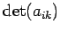
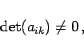
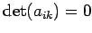
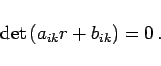
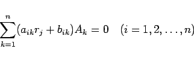
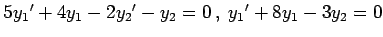
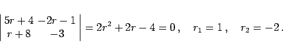

Inhalt Index DeskTop Bronstein

 Differentialgleichungen Gewöhnliche Differentialgleichungen Differentialgleichungen höherer Ordnung und Systeme von Differentialgleichungen Systeme linearer Differentialgleichungen mit konstanten Koeffizienten
Differentialgleichungen Gewöhnliche Differentialgleichungen Differentialgleichungen höherer Ordnung und Systeme von Differentialgleichungen Systeme linearer Differentialgleichungen mit konstanten Koeffizienten


Homogene Systeme linearer Differentialgleichungen 1. Ordnung mit konstanten Koeffizienten besitzen die allgemeine Form
Wenn die Determinante  nicht verschwindet, d.h.
|  | (9.46b) |
dann läßt sich das System (9.46a) auf die Normalform (9.45a) bringen.
Der Fall  bedarf zusätzlicher Betrachtungen (s. Lit.9.26).
Die Lösung kann auch von der allgemeinen Form aus und nach der gleichen Methode ermittelt werden, die bei der Normalform zur Anwendung kommt. Die charakteristische Gleichung hat dann die Form
|  | (9.46c) |
Die Koeffizienten Ai in der Lösung (9.45c), die der einfachen Wurzel rj entsprechen, werden in diesem Falle aus dem Gleichungssystem
|  | (9.46d) |
bestimmt. Ansonsten entspricht die Lösungsmethode derselben, die im Falle der Normalform angewendet wurde.
| Beispiel |
|
Die charakteristische Gleichung des Systems der zwei Differentialgleichungen  lautet 
|